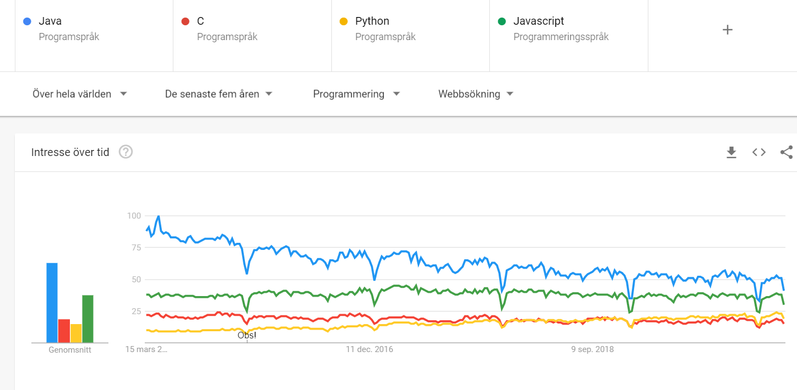
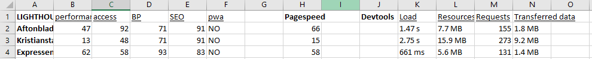
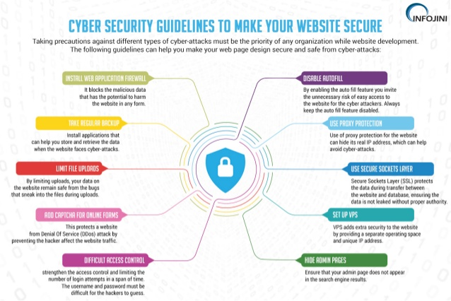

A report from the course XXX
S01
Here is the text for this section.
I knew about Git and GitHub, worked with here at university but i am still only got basic skills Markdown and GitHub pages i havent heard off, still need to read more abour Markdown.
I have never created a website before but always had it in mind and wanted to learn. So i am excited for the course. I have no knowledge from before this course just some subject around it by reading.
TIL ! (Today i learned)
- Refreshed my knowledge in github terminal, i have mostly been using the GUI version before.
- Learned a bit how to work with Atom
- To keep my forked repo up-to-date with the original
- Setup website using GitHub pages
- Writing some HTML style
S02
Here is the text for this section.
The experince i have about HTML is from previous courses and exams but practically i had no experience. CSS i have only heard a little about but no experince. javascript i heard about but didnt know anything about it.
- HTML, CSS, Javascript = Essential building blocks of websites
- HTML (Hypertext Markup language), programming language used to descibe the structure of infortmation on a webpage
- CSS (Cascading Style Sheets), controlling the pages apperarance.
- Javascript (Object orient programming language), create responsive, interactive elements for web pages, enhancing the user experience.
HTTP protocol = Is the way web browsers and servers talk to each other. Clients (web browsers), send requests to web servers for web elements like pages and pictures.
TIL ! (Today i learned)
- I have learned how to create a report page, set of HTML, CSS and Javascript.
- How to link to other websites and add a image.
- How much you can do with just these tools and its quite complex.
S03
Here is the text for this section.
Do you have any previous experience of client side JavaScript?
I dont have any previous experience of client side JavaScript, just the experince from lectures.
Can you compare and relate the JavaScript language to any other language you know?
Yes, i have worked alot in Java and JavaScript resembles it, you can even use the some of the same syntax.
Java is an OOP (object-oriented programming) language, and JavaScript is specifically an OOP scripting language. Java code must be compiled, and JavaScript code is all-text.
Describe how you worked with the coding exercise, what grade do you aim for and how did your code turn out to be?
For the Exercise i worked from the descibtion and googled what i didnt know or wasnt sure about. I also talked to classmates about solutions. I think we lacked alot of explanation on the schoool part, I think this part wa very confusing. I aim for grade 5 but still have to work on the school part for that but the rest i have done and it was fun.
TIL ! (Today i learned)
- Played around with JavaScript and the duck.
- I learned working with CSS when doing flags.
- Also learned about xampp.
S04
Here is the text for this section.
Tell me about your previous experience on node/npm or any equal programming tools.
I have no previous experince on node/npm or any equal programming tool.
How do you feel about working with JavaScript, Node and Express?
It is fun to learn and try more and new, these is things that i might come across when working in the future so it is also a great experince to have.
Explain how you did take on the coding assignment, did you have a plan and did it work?
I followed the exercises and they helped get the base of the assignment/lab, first i had problems with doing it because had a few errors but solved it. My plan was to do more but will have to postpone it a little bit.
What grade did you aim for and was it a difficult level?
First plan was grade 5 but had to many problems ad errors so aim in the end was grade 3. will see if i will keep working on it later !
TIL ! (Today i learned)
- I learned using Node and express
- I kept improving JavaScript skills.
- middleware, route, view ejs. I lerned how i can structure and organize code and module.
S05
Here is the text for this section.
How do you feel about PHP as a programming language?
It was intresting to learn about and combining it with database and working on the server side.
Can you compare PHP to other languages you know?
JavaScipt and mysql is scipt languages so can compare that. Syntax looks like C code.
Describe how you took on the coding exercise, what grade did you aim for and are you satisfied with the result?
First i just followed your instrutions and looked again on the videos you posted.
In the assignment most was just to change the style to php so not so hard in the beginning. Then we played around with database and also fixed a search page, i was happy with grade 3 because struggles with the thesis in the other course.
TIL ! (Today i learned)- I learned using PHP and database in this enviroment.
- I also learnt that php is used for around 50% of webpages.
- php is a script language.
S06
Here is the text for this section.
What is your own opinion on popularity of programming languages and what are your thoughts of future popularity among programming languages?
My opinion is that the most popular programming languages would be languages that is older (Used in alot of applications) and still performance strong. 2 biggest is Java and C for example and they stay that way because of all the systems that already exsist.
Many new languages are on the way and might replace them but the most important thing is still not the popularity but if you can reach the same result, then it does matter how popular te language is.
What will be your own choice for selecting future programming languages?
I dont have my own choice of future programming language, i havent worked with so many so couldnt decide.
Java and C is a good start because of popularity and what would mean most jobs require it?
Without to much experience, maybe python because of computer vision and ML, sounds fun but who knows
I would try to adapt for the workplace i work at.
Do your own investigation on https://trends.google.com (Links to an external site.) to customize your own comparison on programming languages (or frameworks) and elaborate on the results.
I compared JavaScipt, Java, C and python

If you were to recommend a language/framework/technology to your potential employer and your next large project, what would it be and how would you “sell it”?
Would not say i am in a posistion to do that with my knowledge. Kinda like the question with what i want to work with in the future just that i have to sell it to my potential employer.
So i take Python because of the performance in computer vison and ML, it is fast and flexible. It is very popular with these technologies now so have to act fast
TIL ! (Today i learned)- I used google trends for the first time.
- Leant about the popularity of different programming languages.
S07
Here is the text for this section.
turtorial was better on other tasksTry to explain the platform .NET (C#, ASP.NET) to a skilled programmer, but newbie to this Microsoft technology.
It is developed by Microsoft, and can be used to develop webapplications.
In .Net C# or F# is used.
Generates a skeleton/template when doing a project
Can be hard to start with when new but good for scalling and having a efficient webapplication
Elaborate by comparing .NET technologies with the other technologies we learned during the course.
I feel that .NET is much harder and that is most beaucase of lack of users and documentation but also because og the big confusing generated templates we get when using .NET (FILES/CODE/FOLDERS).
Describe how you took on the coding exercise, what grade did you aim for and are you satisfied with the result?
First of all i thnik the turtorial could have been better here like in other tasks.
.Net was a hard challang, when i was doing part two with webapp i had alot of problem of understanding.
I aimed for a 3 because of the difficulty i had and also because of thesis taking alot of time.
Could have watched more vidoes to get more understanding but lacked the time.
TIL ! (Today i learned)- I learned using .Net in a few basic ways.
- Console basic
- Webapp basic
S08
Here is the text for this section.
Our group contains Felix, Martin, VilleFindings and elaboration
The best of our three websites was definitely Expressen, it loaded the fastest, and performed best on almost every aspect. Aftonbladet was not very far behind, as it also was a quick and good website. Kristianstadbladet on the other hand, was not very close to the other two websites. It was a slow website compared to them. We used pagespeed to see the biggest problems of the websites and how to solve them. Aftonbladet had a quick site and could not improve that much. The biggest time-saver they could do is to eliminate render-blocking resources, and thereby save 1.07 seconds. They could also improve some image-problems. But overall they have a very quick site. Expressens website is excellent, their only time-saver would be to defer offscreen images. But other than that, their website runs very quick. Kristianstadbladet has some very bad statistics compared to Aftonbladet and Expressen. Their website runs significally slower and could save a lot of time on some issues. They could save 11.25 seconds on serving images in next-gen formats. And 10.92 seconds on defering offscreen images.

TIL ! (Today i learned)- I learned to use pageSpeed
- I learned to use Lighthouse
- I learned to use Devtools network tab
S09
Here is the text for this section.
Elaborate on a few (3-5) different security issues or concerns, from your own experience, related to web application security and relate them to the OWASP top ten.
Security issues from my experience would be keeping my passwords safe. I mean nowadays there is so many new accounts that is created and you need a new password every time which makes it hard to be crative and safe. I have this problem and will try using a password manager. but i keep thniking that if you break in to the password manager then you have access to everything.
Many account use google(Gmail) or Facebook to sign up or log in with, it sounds like good idea but also here its hard to know how high the safety is.
My girlfriend did the misstake to clicking on a link in an email that was not safe. Then her instagram was hacked where they change her accountname and email. You always think it wont happen to you until it does !
So Broken access Control, Insecure Deserialization and also heard of Injections Attacks.
Summarize by providing your own guidelines to a new web programmer on the topic “The essential guidelines to follow to create secure web applications”.
To make a safe website you have to use https nowadays, also dont use unsafe api's and libraries

TIL ! (Today i learned)- I learned about the OWASP 10.
- Ways to stay safe on the web and when developing
S10
Here is the text for this section.
Write a general paragraph about how the project was implemented. Problems / solutions / simple / difficult / fast / long time, etc.
Was the project easy or difficult? Did it take a long time? What was difficult and what went easy?
Was this a good and reasonable project for this course? How was it to work in a team?
The project strated out with a meeting with Broby hushållsservice, where we got some thoughts and details on what they wanted for the website
We stated out by deciding Asp.Net as language, because we heard of it and seen it in a few job applications. It was intresting to learn about but made many simple things even harder and there was not as much information as other languages.
After half the time we switched language to Node.js and stright html and css, made it alot easier, we had less time left for the project and design and layout was harder than we thought and gave us some headache.
We are now finished with the project but still have stuff to do on the website for the client in Broby, it was harder to create these websites than i thought.
Teamwork was good everybody shared the burden and helped. and project was good and reasonable!
FINAL Paragraf about course
I liked the couse and liked Michael as a teacher!
I think the course was a bit heavy with also an exam and alot of documentation..
A bit disapointed i couldnt do more 5 grade tasks because of time on the thesis
I think maybe asp.net part should be a bit better maybe with some turtorial and exercise similar to Node.js
Maybe have .Net part earlier becuse it was harder, i could feel more stressed in the end and not taking as much care so if we got .net done in the beginning maybe its easier to finish with some other language. (just a thought ofc)
I would recommend the course to others and i am satisfied, it gets 8/10.
TIL ! (Today i learned)- Kept developing skills for .NET and Node.js
- Lerned more CSS
- How annoying it can be to build a website when you do more details and layout.